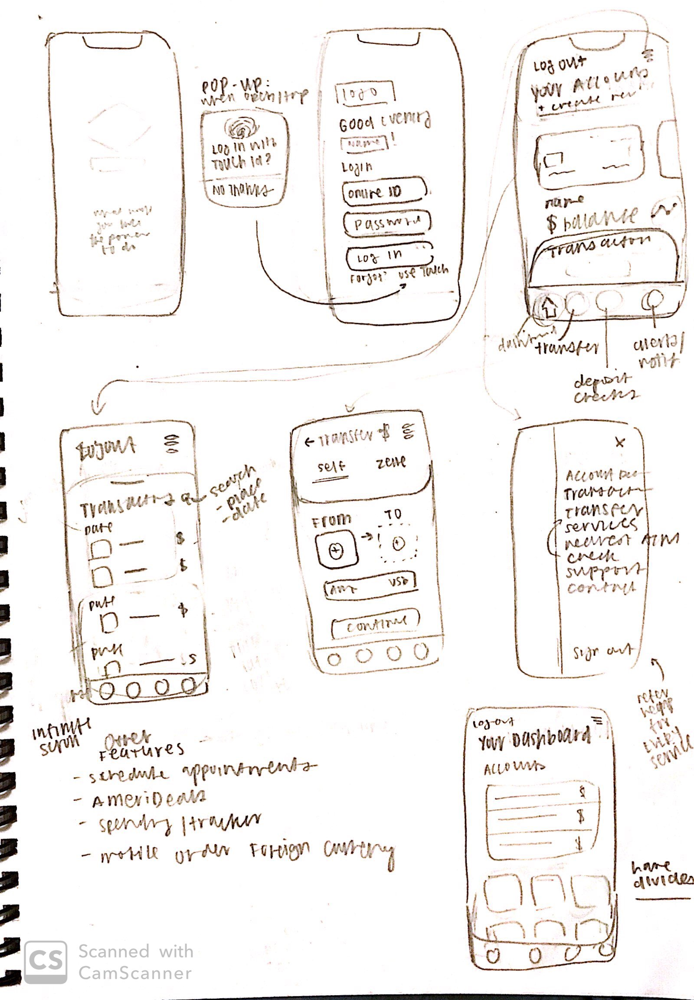
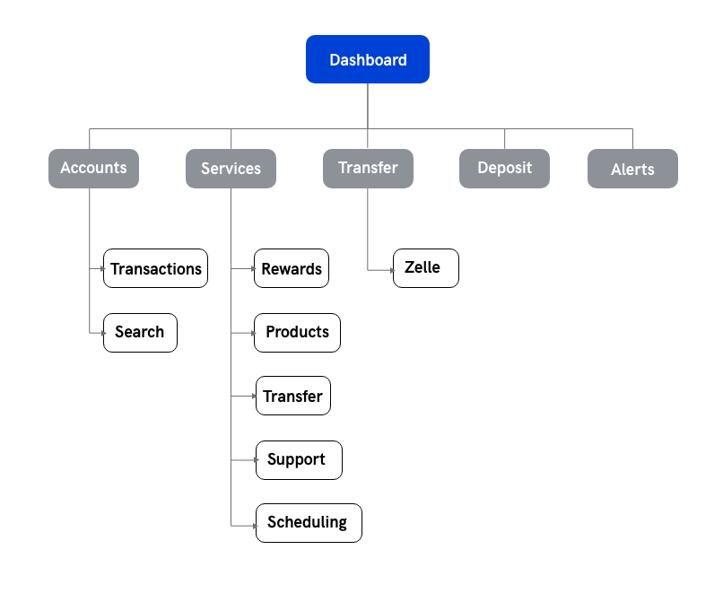
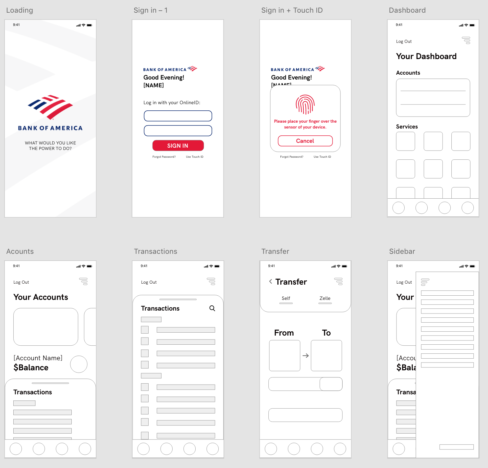

Design Goals
Streamline — Increase ease of access and clarity of currently hidden features
Centralize — Concentrate pertinent interactions and information into a singular dashboard.
Update — Bring app aesthetics up to speed with current visual trends and patterns.
Wireframes

Design Decisions
Accounts — For those with multiple checkings and savings accounts, it could get confusing which is which going just by account numbers, so I wanted to create additional visuals. A representation of an account in real life is the credit/debit card tied to it. Customers are more likely to recognize which account is which by seeing the card they use to pay in real life. I put 3 important pieces of information on the page: balance, recent transactions, and a button that would direct the user to a page with more data visualizations that would help a customer understand how they are spending their money.
Transactions — A transaction history is useful information when one cannot remember how much an item was for example, or to potentially catch fraudulent charges. However, transactions can get buried, Adding an ability to search for a specific transaction remedies that.
Dashboard — The original dashboard was a bit more hidden. Having smaller icons and more icons per row will provide a broader overview of the app. In addition, the hamburger menu opens up to a list view of the dashboard so that each feature is represented.
User Flow

Mid-Fi Mockups

Hi-Fi Prototype